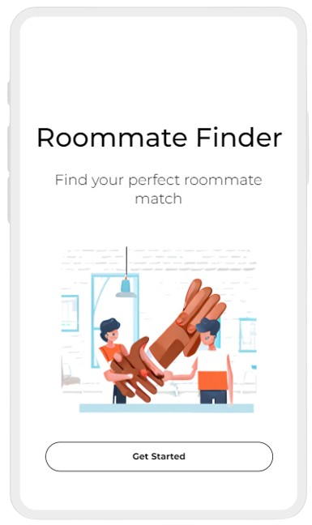

project notes with source links or demo previews
Model serving, multimodal AI, robotics prototypes
I build AI demos with the engineering needed to test, reuse, and hand them off.
My recent work is practical rather than research-only: Qwen-family VLM demos, FastAPI and vLLM model APIs, Qwen3-VL batch detection, RealSense + SAM 3 tracking, Jetson AGX Orin tests, RAG/LoRA experiments, and full-stack prototypes with clear run notes.
- Education
- BSc (Honours) in Computing, The Hong Kong Polytechnic University
- Best fit
- Entry-level AI developer, GenAI developer, AI application engineer, software engineer
- Core stack
- Python, FastAPI, vLLM, PyTorch, Docker, Linux, React, Node.js, Nginx
Working stack
Tools I have used in shipped or demo work
Python
FastAPI
vLLM
PyTorch
Hugging Face
Qwen VLM
Gradio
Docker
Linux
Nginx
React
Node.js
Firebase
RealSense
SAM 3
Jetson AGX Orin
AI workstreams: model APIs, multimodal detection, robotics perception
static Cloudflare Pages site, no embedded API keys, resume included
Selected work
Project notes a recruiter or engineer can skim quickly
I kept these short on purpose. Each card gives the problem, what I built, and a piece of evidence. The demo buttons below update the interactive panel without leaving the page.
GenAI + computer vision
Qwen3-VL DuoImage Detector
- Problem
- Find objects in a search image that match a separate reference image.
- Built
- Python workflow for pairing, VLM prompting, JSON parsing, coordinate conversion, and rendered outputs.
- Evidence
- Reference image, search image, result image, JSON, CSV/XLSX summary path.
Full-stack AI app
Property Management System
- Problem
- Turn tenant issues and staff updates into a visible workflow.
- Built
- Node.js, Socket.IO, login sessions, owner/staff dashboards, chat, and an AI reply path.
- Evidence
- Runnable prototype structure with end-to-end request flow.
Robotics perception
RealSense + SAM 3 Tracking Prototype
- Problem
- Keep object state usable for robotics demos, not just visible on screen.
- Built
- Color/depth input notes, mask tracking, bbox, 2D/3D anchor fields, and pose cues.
- Evidence
- Canvas preview and structured object-state format shown in the demo panel.
Security + web
E2EE Chat Network Application
- Problem
- Design a chat app where transport, login, and message handling can be reviewed.
- Built
- Flask, MySQL, Docker Compose, TLS/Nginx setup, OTP/MFA flow, and encryption design notes.
- Evidence
- Deployment notes and security flow documentation in the project folder.

React + Firebase
RentConnect Secure SaaS Platform
- Problem
- Build a real-estate workflow with accounts, listings, and a modern web UI.
- Built
- React, Firebase Auth, Firestore, Material UI, Redux Toolkit, and payment wiring.
- Evidence
- Showcase image plus source folder with app structure.
AI workflow
AI Finance Advisor
- Problem
- Turn local financial context into a structured report draft.
- Built
- Python workflow that reads local inputs, calls an LLM API, and writes Markdown reports.
- Evidence
- Report skeleton and review-first workflow. It is not financial advice.
Interactive preview
Demo panel
These are static previews, not live model inference. I use them to show inputs, outputs, and the small checks around each project.
How I work
A few notes that make the work less generic
I try to leave evidence behind.
For AI demos, I care about files and screenshots that let someone else verify the result: input pairs, rendered outputs, logs, CSV summaries, timing notes, and clear setup steps.
I use AI tools, but I still own the result.
I use Codex, Antigravity, Hermes OpenClaw, and Coze for scaffolding, debugging, workflow drafts, and documentation. The useful habit is checking assumptions, running the code, and trimming generated text until it sounds like something I would actually say.
I like messy prototype work.
My recent work often sits between model behavior, cameras, APIs, Linux boxes, and demo deadlines. I am comfortable making the first version work, then writing enough notes that the next person is not guessing.
Experience
Recent engineering work
Beijing Qianjue Technology - AI Developer Experience
Worked on robotics AI demos around Qwen-family models, FastAPI, Gradio, vLLM, RealSense/SAM tracking, batch detection scripts, and edge AI testing on Jetson AGX Orin and RK3588/RKNN devices. The work was hands-on: setup, scripts, outputs, reports, timing checks, and demo maintenance.
Dream Technology Solutions - Co-Founder and Infrastructure Lead
Handled client requirements and infrastructure setup for server environments, ESXi/RAID/Docker/Nginx, reverse proxies, tunneling, BeamNG and Minecraft server deployments, mod testing, troubleshooting, and handoff documentation.
Microsoft and WeDragon - AI/Software Internships
Supported LLM deployment experiments, cloud server maintenance, AI course materials, Jupyter labs, exams, project-site maintenance, and documentation updates.
Contact
Open to AI developer and software engineering roles.
Best fit: LLM/VLM application engineering, Python/FastAPI services, robotics demo tooling, multimodal workflows, and full-stack prototypes that need practical delivery.